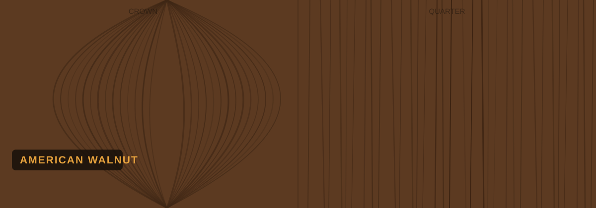
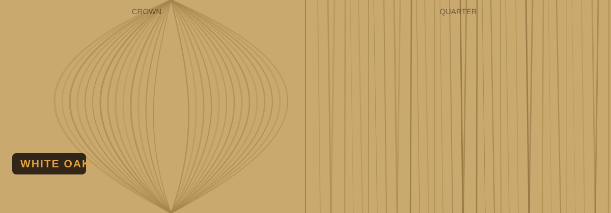
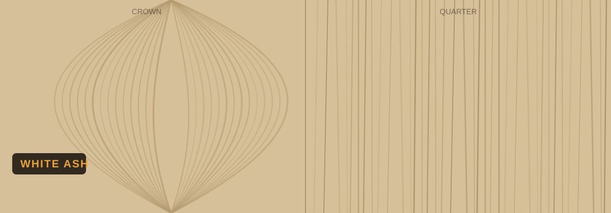
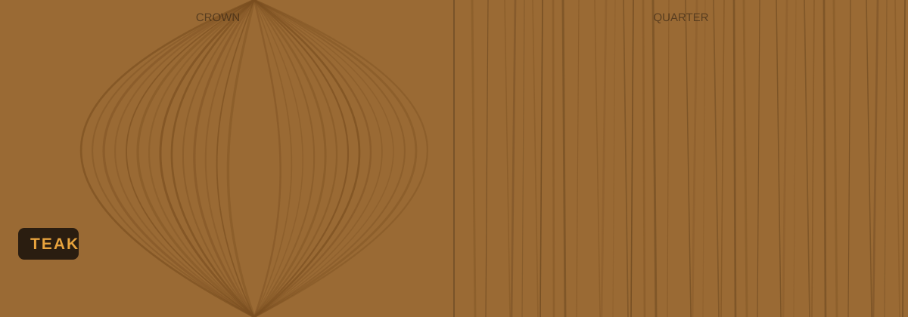
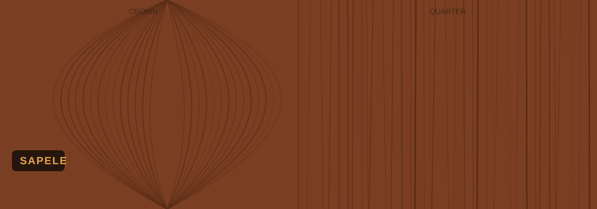
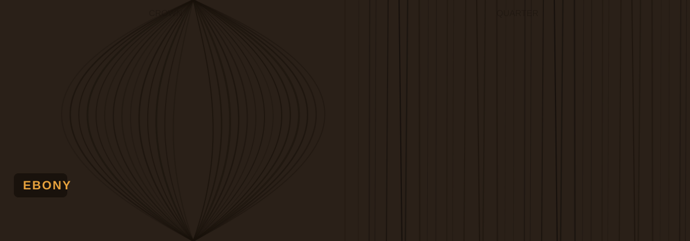
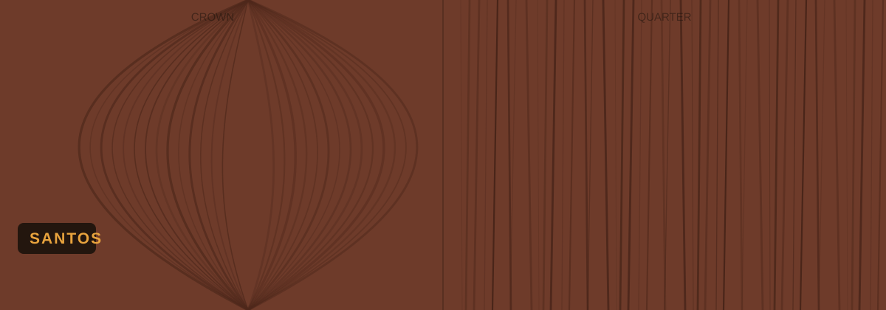
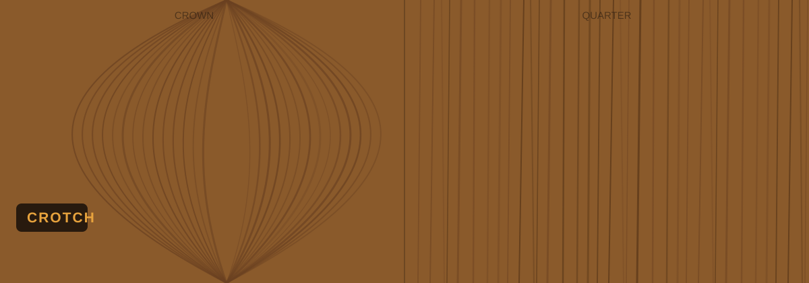
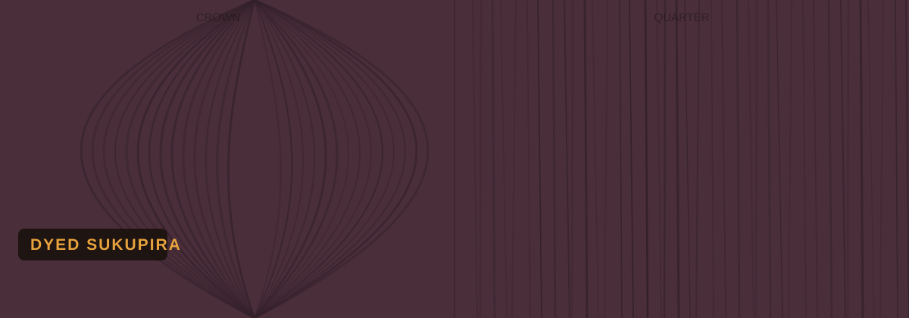
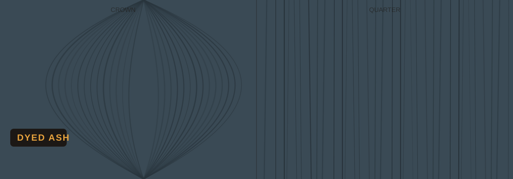

Choose your veneer

American Walnut
American walnut, walnut veneer sheet, dark walnut veneer
Crown & quarter →
White Oak
white oak veneer, oak veneer sheet, light oak veneer
Crown & quarter →
White Ash
white ash veneer, ash veneer sheet
Crown & quarter →
Teak
teak veneer, teak veneer sheet, burma teak veneer
Crown & quarter →
Sapele
sapele veneer, sapeli veneer sheet
Crown & quarter →
Ebony
ebony veneer, black veneer sheet
Crown & quarter →
Santos
santos veneer, santos rosewood veneer
Crown & quarter →
Crotch
crotch veneer, flame veneer, figured veneer
Crown & quarter →
Dyed Sukupira
dyed sukupira veneer, sukupira veneer
Crown & quarter →
Dyed Ash
dyed ash veneer, coloured veneer
Crown & quarter →
Textured
textured veneer, brushed veneer, 3d veneer
Crown & quarter →Each species is available in both crown and quarter cut. Every sheet is unique — we'll share photos of current stock.